Fonte: gare di altri paesi/India/biologia/NSEB_2025_Question.pdf · Apri PDF · apri PDF p.1
Cluster: Meccanica
Soluzioni (stessa cartella): · · · · · · · · · · ·
Problema 1
Physiological mechanisms of C and C plants highlight fundamental differences in how they cope with stressors like water loss, high temperatures and photorespiration. C plants rely on the Calvin cycle for carbon fixation while C plants have a mechanism to concentrate around Rubisco. The reason for C plants to experience higher levels of photorespiration under environmental stress could be because
(A) C plants have RUBISCO which has greater affinity for oxygen as compared to carbon dioxide. (B) C plants are unable to survive in high-temperature environments. (C) C plants cannot concentrate effectively around Rubisco, increasing oxygen interference. (D) C plants cannot utilize ETS effectively during photosynthesis whereby there is excess production of oxygen free radicals.
Topic: Thermodynamics, Kinetic Theory Metodi: Physical Modeling, Conservation Laws Competenze: Physical Reasoning Fonte: Testo (PDF) — p.3
Problema 2
Which of the following statements best describes the role of the origin of replication (ori) in a recombinant plasmid used for bacterial transformation?
(A) The ori is responsible for the antibiotic resistance of the plasmid. (B) The ori ensures the plasmid is integrated into the bacterial chromosome. (C) The ori allows the plasmid to replicate independently within the bacterial cell. (D) The ori is involved in the transcription of the inserted gene.
Topic: Modern-Quantum Physics Metodi: Physical Modeling Competenze: Physical Reasoning Fonte: Testo (PDF) — p.3
Problema 3
During wound healing, different cell populations occupy the wound site as time proceeds. The four types of cells/structures (P–S) that appear at wound healing site are depicted in the graph. They respectively indicate
(A) Monocytes, Fibroblasts, Neutrophils, Collagen (B) Monocytes, Neutrophils, Collagen, Fibroblasts (C) Neutrophils, Monocytes, Fibroblasts, Collagen (D) Fibroblasts, Neutrophils, Monocytes, Collagen
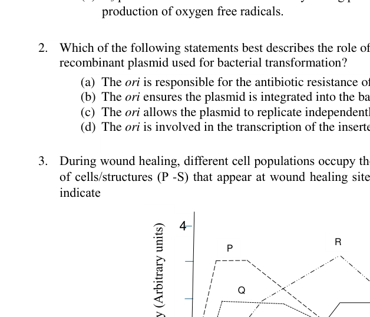
Graph of cell populations P-S vs time during wound healingTopic: Oscillations & Waves Metodi: Experimental Data Analysis, Physical Modeling Competenze: Diagrammatic Reasoning, Physical Reasoning Fonte: Testo (PDF) — p.3
Problema 4
Dorsal view of 7 segments of earthworm is shown in the figure. The correct pathway of excretion in this animal is
(A) Metanephridium Nephrostome Gut Nephridiopore (B) Nephridiopore Metanephridium Gut Exterior (C) Coelom Nephrostome Nephridiopore Exterior (D) Dorsal blood vessel Gut Nephrostome Nephridiopore Exterior
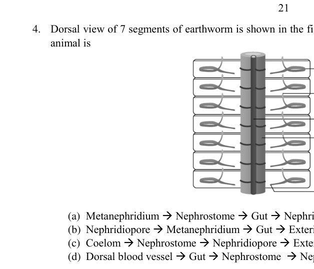
Dorsal view of 7 earthworm segmentsTopic: Fluid Mechanics Metodi: Physical Modeling, Continuity Equation Competenze: Diagrammatic Reasoning, Physical Reasoning Fonte: Testo (PDF) — p.4
Problema 5
For plants to survive in environments with high salinity, salt tolerance is a crucial adaptation. Salt tolerance involves various physiological and biochemical adaptations that help plants to manage the stress caused by excess salt. Understanding these mechanisms is essential for developing salt-tolerant crops and improving agricultural productivity in saline soils. Which of the following statements best describes a key mechanism of salt tolerance in plants?
(A) Plants increase the uptake of sodium ions to enhance growth under high salinity. (B) Plants produce osmoprotectants to stabilize proteins and membranes under salt stress. (C) Plants reduce the production of potassium ions to avoid toxicity in saline environments. (D) Plants enhance photosynthesis to counter the effects of salt stress by increased ETS activity.
Topic: Thermodynamics, Fluid Mechanics Metodi: Physical Modeling, Hydrostatic Equilibrium Competenze: Physical Reasoning Fonte: Testo (PDF) — p.4
Problema 6
Kidneys are essential organs in vertebrates that play a vital role in maintaining homeostasis by excreting metabolic waste and reabsorbing necessary substances. Which of the following mechanisms is primarily responsible for the counter current multiplication process in the Loop of Henle?
(A) Secretion of urea in the collecting duct (B) Passive diffusion of water in the descending limb (C) Filtration of blood in the glomerulus (D) Active transport of sodium ions in the ascending limb
Topic: Fluid Mechanics, Thermodynamics Metodi: Physical Modeling, Continuity Equation Competenze: Physical Reasoning Fonte: Testo (PDF) — p.4
Problema 7
Muscle function in obese runners can be significantly different from that in non-obese runners due to various factors. These factors can affect the overall performance. Which of the following statements best describes the muscle functions namely muscle strength (ability to exert force) and muscle endurance (ability to sustain the force) in obese runners compared to non-obese runners?
(A) Obese runners have higher muscle endurance but lower muscle strength compared to non-obese runners. (B) Obese runners have lower muscle endurance and lower muscle strength compared to non-obese runners. (C) Obese runners have higher muscle strength but lower muscle endurance compared to non-obese runners. (D) Obese runners have similar muscle strength and endurance compared to non-obese runners.
Topic: Newtonian Mechanics, Conservation of Energy Metodi: Physical Modeling, Energy Conservation Method Competenze: Physical Reasoning Fonte: Testo (PDF) — p.4
Problema 8
Heart of fish is two-chambered with one atrium and one ventricle. The fish’s respiratory system involves gills for oxygen exchange. Which of the following statement best describes the flow of blood through the heart of a fish?
(A) Blood flows from the ventricle to the atrium, then to the gills. (B) Blood flows from the atrium to the ventricle, then to the gills. (C) Blood flows from the gills to the atrium, then to the ventricle. (D) Blood flows from the gills to the ventricle, then to the atrium.
Topic: Fluid Mechanics Metodi: Physical Modeling, Continuity Equation Competenze: Diagrammatic Reasoning, Physical Reasoning Fonte: Testo (PDF) — p.5
Problema 9
Which of the following mechanisms is primarily responsible for the osmotic regulation in catadromous fishes like eels, when they migrate from freshwater and transition into seawater?
(A) Increased production of dilute urine. (B) Active uptake of salts through the gills. (C) Drinking of seawater and active excretion of salts. (D) Decreased permeability of the skin.
Topic: Fluid Mechanics, Thermodynamics Metodi: Physical Modeling, Hydrostatic Equilibrium Competenze: Physical Reasoning Fonte: Testo (PDF) — p.5
Problema 10
Which of the following statements best describes the role of restriction enzymes in the process of DNA amplification using primers?
(A) Restriction enzymes are used to synthesize primers that bind to specific DNA sequences. (B) Restriction enzymes cut the DNA at specific sites, allowing primers to bind and initiate replication. (C) Restriction enzymes are responsible for the elongation of primers during DNA synthesis. (D) Restriction enzymes modify the primers to enhance their binding affinity to the target DNA.
Topic: Modern-Quantum Physics Metodi: Physical Modeling Competenze: Physical Reasoning Fonte: Testo (PDF) — p.5
Problema 11
In chemosynthetic bacteria, the electron transport system is crucial for energy production. Which of the following statements accurately describes the mechanism by which the electron transport system contributes to ATP synthesis?
(A) The electron transport system directly phosphorylates ADP to ATP without the involvement of a proton gradient. (B) The electron transport system generates a proton gradient across the bacterial membrane, which drives ATP synthesis through chemiosmosis. (C) The electron transport system uses chemical energy from organic molecules to excite electrons, which are then transferred to oxygen to produce ATP. (D) The electron transport system incorporates carbon dioxide into organic molecules, which are then used to generate ATP.
Topic: Thermodynamics, Conservation of Energy Metodi: Physical Modeling, First Law of Thermodynamics Competenze: Physical Reasoning Fonte: Testo (PDF) — p.5
Problema 12
In a small population of beetles, the frequency of a particular allele (A) is 0.6, and the frequency of the alternative allele (a) is 0.4. Due to genetic drift, what is the most likely outcome for the allele frequencies after several generations?
(A) The frequency of allele A will increase to 1.0, and allele a will be lost. (B) The frequency of allele a will increase to 1.0, and allele A will be lost. (C) The frequencies of alleles A and a will change and lead to loss of one allele that is less fit. (D) The frequencies of alleles A and a will fluctuate randomly and may lead to loss of either allele.
Topic: Modern-Quantum Physics Metodi: Statistical Averaging, Physical Modeling Competenze: Mathematical Modeling, Physical Reasoning Fonte: Testo (PDF) — p.5
Problema 13
The antibodies secreted by B-cells upon stimulation are classified according to the amino acid sequence of the
(A) light chain (B) heavy chain (C) both light and heavy chain (D) hinge region
Topic: Modern-Quantum Physics Metodi: Physical Modeling Competenze: Physical Reasoning Fonte: Testo (PDF) — p.5
Problema 14
The r and K selections are two contrasting strategies in the reproductive ecology of organisms. The r-selected species are characterized by high reproductive rates while K-selected species have lower reproductive rates. Which of the following characteristics is most likely to be observed in a K-selected species?
(A) Long life span and early maturity (B) Short lifespan and rapid population growth (C) High parental investment and low offspring mortality (D) Opportunistic reproduction and high dispersal ability
Topic: Oscillations & Waves Metodi: Physical Modeling, Statistical Averaging Competenze: Physical Reasoning Fonte: Testo (PDF) — p.6
Problema 15
The efficiency and regulation of gene expression in an operon are significantly influenced by the promoter’s strength and its interaction with regulatory proteins. Which of the following statements is the correct description of the role of the promoter in the regulation of the trp operon in Escherichia coli?
(A) The promoter of the trp operon is always active, leading to continuous transcription of the operon genes regardless of tryptophan levels. (B) The promoter of the trp operon is only active in the presence of tryptophan, leading to the transcription of the operon genes. (C) The promoter of the trp operon is repressed by the trp repressor protein in the presence of tryptophan, preventing transcription of the operon genes. (D) The promoter of the trp operon is activated by the trp repressor protein in the absence of tryptophan, leading to the transcription of the operon genes.
Topic: Modern-Quantum Physics Metodi: Physical Modeling Competenze: Physical Reasoning Fonte: Testo (PDF) — p.6
Problema 16
In a routine medical check-up, it was found that Ms. Prishali’s maternal grandmother is a carrier of the recessive allele for haemophilia. Her maternal grandfather does not have haemophilia. Prishali is not haemophilic and is married. Her husband does not have haemophilia. If Prishali gets two children: a son and a daughter, which of the following statements is correct?
(A) The son has a 0.5 probability of having haemophilia, while the daughter has a 0.5 probability of being a carrier. (B) The son has a 0.125 probability of being haemophilic, while the daughter has a 0.125 probability of being a carrier. (C) The son has a 0.25 probability of having haemophilia, while the daughter has a 0.25 probability of being a carrier. (D) The son has a 0.75 probability of being haemophilic, while the daughter has a 0.25 probability of having haemophilia.
Topic: Modern-Quantum Physics Metodi: Statistical Averaging, Physical Modeling Competenze: Mathematical Modeling, Physical Reasoning Fonte: Testo (PDF) — p.6
Problema 17
Origin of life on primordial earth began with the earliest replicators like
(A) short RNA-like molecules (B) long RNA-like molecules (C) short DNA-like molecules (D) long DNA-like molecules
Topic: Modern-Quantum Physics Metodi: Physical Modeling Competenze: Physical Reasoning Fonte: Testo (PDF) — p.6
Problema 18
In a population of eusocial insects, how would kin selection influence the allocation of resources among offspring, considering the varying degrees of relatedness within the colony?
(A) Kin selection leads to equal resource allocation among all offspring, regardless of relatedness. (B) Kin selection causes workers to allocate more resources to offspring that are less related to them to increase genetic diversity. (C) Kin selection results in preferential resource allocation to offspring with the highest genetic relatedness to the queen. (D) Kin selection promotes random resource allocation to avoid favouritism and maintain colony harmony.
Topic: Oscillations & Waves Metodi: Statistical Averaging, Physical Modeling Competenze: Physical Reasoning Fonte: Testo (PDF) — p.6
Problema 19
The length of Loop of Henle (LH) in nephron plays a crucial role in regulation of water in mammals. While considering beaver, otter, camel and hippopotamus, which of the following would be a correct depiction of the trend in the length of LH?
(A) Camel > Otter > Hippopotamus > Beaver (B) Otter > Hippopotamus > Camel (C) Camel > Hippopotamus > Beaver (D) Beaver > Camel > Hippopotamus > Otter
Topic: Fluid Mechanics, Thermodynamics Metodi: Physical Modeling, Order-of-Magnitude Estimation Competenze: Estimation & Approximation, Physical Reasoning Fonte: Testo (PDF) — p.7
Problema 20
In animals, many embryonic cells are capable of crawling over a substrate using
(A) extracellular matrix (B) integrins (C) pseudopodia (D) lamellipodia
Topic: Newtonian Mechanics Metodi: Physical Modeling Competenze: Physical Reasoning Fonte: Testo (PDF) — p.7
Problema 21
The CORRECT assumption on Hardy-Weinberg equilibrium is
(A) small population size, random mating, no selection, no migration, no mutation (B) large population size, random mating, no selection, no migration, no mutation (C) large population size, random mating, heterozygotes survive the best, no migration, no mutation (D) large population size, random mating, no selection, migrants enter from other populations, no mutation
Topic: Modern-Quantum Physics Metodi: Statistical Averaging, Physical Modeling Competenze: Mathematical Modeling, Physical Reasoning Fonte: Testo (PDF) — p.7
Problema 22
Based on the data on trophic niches and two reproductive strategies namely K-, r-strategies, a very primitive table (also called as periodic table of niche) can be constructed. In the context of the following table identify the correct option that places appropriate organisms in their proper niches.
| Trophic niche | |||
|---|---|---|---|
| Strategy | Primary producer | Herbivore | Carnivore |
| r | P | Q | R |
| Intermediate | |||
| K | S | T | V |
(A) P = Annual plants, R = Eagle, T = Antelope (B) S = Shrubs, Q = caterpillars, V = Mantid (C) S = Perennial Plants, Q = bees, V = falcons (D) Q = Parrots, R = Dragonflies, S = Perennial plants
Topic: Oscillations & Waves Metodi: Physical Modeling, Statistical Averaging Competenze: Diagrammatic Reasoning, Physical Reasoning Fonte: Testo (PDF) — p.7
Problema 23
In molecular phylogenetics of vertebrates, which of the following gene markers would be least preferred for resolving deep divergences (hundreds of millions of years ago) due to its high substitution rate and risk of saturation?
(A) 12S ribosomal RNA mitochondrial gene (B) Cytochrome b mitochondrial protein-coding gene (C) RAG1 nuclear protein-coding gene (D) 18S ribosomal RNA nuclear gene
Topic: Modern-Quantum Physics Metodi: Physical Modeling, Statistical Averaging Competenze: Physical Reasoning Fonte: Testo (PDF) — p.7
Problema 24
Elysia clarki, a sea slug, after feeding is known to utilize photosynthesis for a period of time, essentially becoming a “solar-powered” organism. An electron micrograph of a section of the diverticulum (a digestive organ) of this organism is shown.
The structure labelled as X is:
(A) Mitochondrion (B) Chloroplast (C) Peroxisome (D) Food vacuole
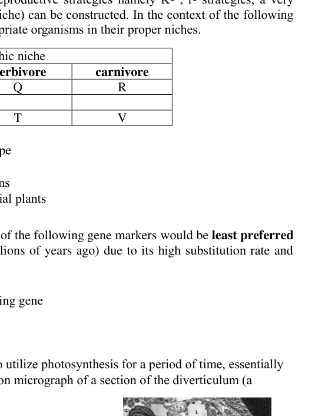
Electron micrograph of diverticulum with structure X labelledTopic: Modern-Quantum Physics Metodi: Physical Modeling Competenze: Diagrammatic Reasoning, Physical Reasoning Fonte: Testo (PDF) — p.7
Problema 25
The 16S rRNA gene is commonly used for bacterial identification and phylogenetic studies. In a 16S rRNA gene sequencing analysis, it was observed that a particular operational taxonomic unit (OTU) is present in high abundance in the sample. When this OTU is compared to a reference database, however, it is found that it matches multiple different bacterial species with high similarity scores. What is the most likely explanation for this observation?
(A) The OTU represents a novel bacterial species that is not present in the reference database. (B) The OTU is a result of sequencing errors and does not represent a real bacterial species. (C) The OTU represents a highly conserved region of the 16S rRNA gene that is shared by multiple bacterial species. (D) The OTU is a chimera formed during the PCR amplification process.
Topic: Modern-Quantum Physics Metodi: Physical Modeling, Statistical Averaging Competenze: Physical Reasoning Fonte: Testo (PDF) — p.8
Problema 26
During ‘Fight or flight’ response, both epinephrine and norepinephrine are secreted that lead to several physiological responses. Which of the following is NOT a ‘Fight or flight’ response?
(A) Vasoconstriction in the skin (B) Dilatation of bronchioles (C) Increased peristalsis (D) Vasodilatation in skeletal muscles
Topic: Fluid Mechanics, Newtonian Mechanics Metodi: Physical Modeling Competenze: Physical Reasoning Fonte: Testo (PDF) — p.8
Problema 27
In an experiment studying neuronal transmission, researchers observed that the application of a specific neurotransmitter resulted in a prolonged depolarization of the postsynaptic neuron. Which of the following mechanisms is most likely responsible for this observation?
(A) Activation of voltage-gated sodium channels leading to an influx of sodium ions. (B) Inhibition of potassium channels preventing the efflux of potassium ions. (C) Activation of ligand-gated ion channels allowing the influx of calcium ions. (D) Inhibition of chloride channels preventing the influx of chloride ions.
Topic: Electrostatics, Circuits Metodi: Physical Modeling, Electric Potential Method Competenze: Physical Reasoning Fonte: Testo (PDF) — p.8
Problema 28
In a population of butterflies, the allele for blue wings (B) is dominant over the allele for white wings (b). If the frequency of the blue-winged phenotype in the population is 84%, what is the frequency of the heterozygous genotype (Bb) assuming the population is in Hardy-Weinberg equilibrium?
(A) 0.16 (B) 0.32 (C) 0.48 (D) 0.64
Topic: Modern-Quantum Physics Metodi: Statistical Averaging, Physical Modeling Competenze: Mathematical Modeling, Physical Reasoning Fonte: Testo (PDF) — p.8
Problema 29
Which of the following movements of water is prevented by the Casparian strip in plants?
(A) Symplastic water movement from endodermal cell to xylem cell. (B) Apoplastic water movement from cortical cell to xylem cell. (C) Symplastic water movement from cortical cell to xylem cell. (D) Apoplastic water movement from pericycle cell to xylem cell.
Topic: Fluid Mechanics Metodi: Physical Modeling, Hydrostatic Equilibrium Competenze: Physical Reasoning Fonte: Testo (PDF) — p.8
Problema 30
Which of the following statements best describes the key advantage of using cDNA over genomic DNA in gene expression studies?
(A) cDNA contains introns, which are useful for studying gene regulation. (B) cDNA is more stable than genomic DNA, making it easier to work with in the lab. (C) cDNA represents only the expressed genes, providing a snapshot of gene activity. (D) cDNA can be directly sequenced without the need for amplification.
Topic: Modern-Quantum Physics Metodi: Physical Modeling Competenze: Physical Reasoning Fonte: Testo (PDF) — p.8
Problema 31
How do deep diving marine mammals, such as whales and seals, avoid nitrogen bends (decompression sickness) during their prolonged and deep dives?
(A) They have a higher concentration of red blood cells that store more oxygen, reducing the need to breathe frequently. (B) They collapse their lungs at depth, preventing nitrogen from dissolving into their blood. (C) They have a unique enzyme that breaks down nitrogen bubbles in their bloodstream. (D) They exhale completely before diving, eliminating nitrogen from their lungs.
Topic: Fluid Mechanics, Thermodynamics Metodi: Physical Modeling, Ideal Gas Law Competenze: Physical Reasoning Fonte: Testo (PDF) — p.8
Problema 32
Torpor is a state of decreased physiological activity in animals, characterized by a reduced body temperature and metabolic rate. During torpor, which of the following mechanisms involving brown fat is most critical for preventing hypothermia in small mammals?
(A) Brown fat generates heat through shivering, which increases metabolic rate and body temperature during torpor. (B) Brown fat stores energy in the form of triglycerides, which are oxidized to provide heat during torpor. (C) Brown fat uncouples oxidative phosphorylation in mitochondria, leading to heat production without ATP synthesis. (D) Brown fat generates heat through non-shivering thermogenesis, which helps maintain body temperature without increasing metabolic rate during torpor.
Topic: Thermodynamics, Conservation of Energy Metodi: Physical Modeling, First Law of Thermodynamics, Energy Conservation Method Competenze: Physical Reasoning Fonte: Testo (PDF) — p.9
Problema 33
Which combination of relative concentrations of hormones is responsible for apical dominance seen in plants?
(A) Auxins and gibberellins (B) Auxins and cytokinins (C) Cytokinins and gibberellins (D) Auxins and abscisic acid
Topic: Modern-Quantum Physics Metodi: Physical Modeling Competenze: Physical Reasoning Fonte: Testo (PDF) — p.9
Problema 34
Structures of nephrons along with permeabilities of different sections of renal tubule from two teleost fishes (P and Q) are depicted. Which of the following statements is correct?
(A) Fish P is likely to excrete concentrated urine as compared to Q. (B) Fish Q is likely adapted to sea water habitat. (C) In fish P, most of the ions are reabsorbed along the entire segment of renal tubule followed by water absorption by osmosis. (D) Plasma osmolarity of fish P is likely to be higher than fish Q.
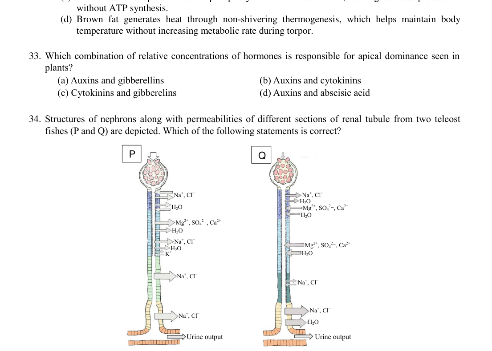
Nephron structures of teleost fishes P and Q with permeabilitiesTopic: Fluid Mechanics, Thermodynamics Metodi: Physical Modeling, Continuity Equation, Hydrostatic Equilibrium Competenze: Diagrammatic Reasoning, Physical Reasoning Fonte: Testo (PDF) — p.9
Problema 35
In vertebrate systematics, which of the following correctly reflects a monophyletic group while excluding paraphyletic or polyphyletic groupings?
(A) Reptilia, excluding birds, because they are ectothermic and share similar skin morphology. (B) “Fishes” including jawless, cartilaginous, and bony fishes, due to their shared aquatic habitat and gills. (C) Tetrapoda, including amphibians, reptiles, birds and mammals, based on shared limb morphology. (D) “Warm-blooded animals” including birds and mammals, based on convergent endothermy.
Topic: Modern-Quantum Physics Metodi: Physical Modeling Competenze: Physical Reasoning Fonte: Testo (PDF) — p.9
Problema 36
Researchers conducted a study comparing two distinct successional systems:
Site 1: Occurring on a sterile, newly exposed volcanic ash substrate. Site 2: Taking place in an abandoned agricultural field with pre-existing soils.
Over time, both sites showed an increase in soil nutrient levels, but the underlying processes differed between the two.
Which of the following statement is true about these succession processes?
(A) Site 1 is an example of primary succession. (B) Succession at site 1 is likely to be a faster process due to rapid nutrient input from invasive species than site 2. (C) Soil nutrient enhancement will be more pronounced at site 1 due to availability of inorganic nutrients in the form of ash. (D) Both the sites will have a completely novel flora and fauna as a result of succession.
Topic: Thermodynamics Metodi: Physical Modeling Competenze: Physical Reasoning Fonte: Testo (PDF) — p.10
Problema 37
Cross sections of the roots of two plants P and Q are shown below. P and Q most likely represent:
(A) Floating hydrophyte and a halophyte (B) Halophyte and a hydrophyte (C) Submerged hydrophyte and halophyte (D) Halophyte and a mesophyte
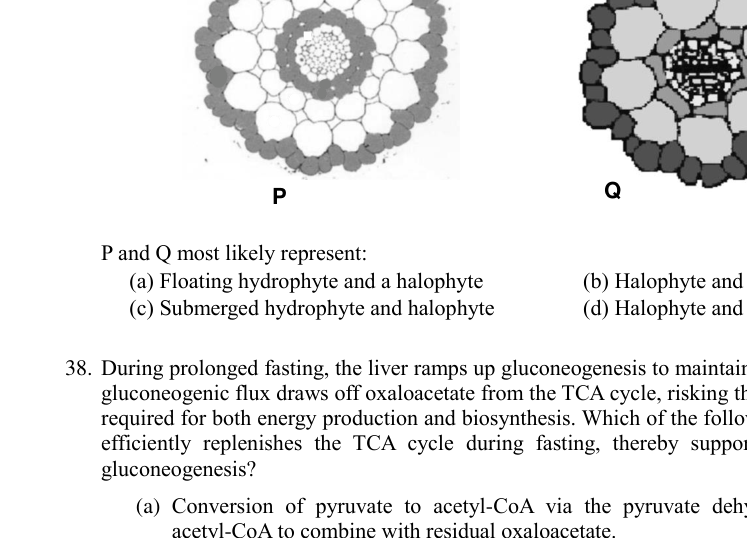
Cross sections of roots of plants P and QTopic: Fluid Mechanics Metodi: Physical Modeling Competenze: Diagrammatic Reasoning, Physical Reasoning Fonte: Testo (PDF) — p.10
Problema 38
During prolonged fasting, the liver ramps up gluconeogenesis to maintain blood glucose levels. However, gluconeogenic flux draws off oxaloacetate from the TCA cycle, risking the depletion of key intermediates required for both energy production and biosynthesis. Which of the following reactions most directly and efficiently replenishes the TCA cycle during fasting, thereby supporting both ATP generation and gluconeogenesis?
(A) Conversion of pyruvate to acetyl-CoA via the pyruvate dehydrogenase complex, providing acetyl-CoA to combine with residual oxaloacetate. (B) Deamination of glutamate to form -ketoglutarate via glutamate dehydrogenase, channelling amino acid carbon into the TCA cycle. (C) Carboxylation of pyruvate to oxaloacetate catalyzed by pyruvate carboxylase, directly restoring the oxaloacetate pool. (D) Transamination of alanine to pyruvate via alanine aminotransferase, indirectly supplying substrate for subsequent TCA cycle replenishment.
Topic: Thermodynamics, Conservation of Energy Metodi: Physical Modeling, First Law of Thermodynamics, Conservation Laws Competenze: Physical Reasoning, Mathematical Modeling Fonte: Testo (PDF) — p.10
Problema 39
Which of the following cells show least telomerase activity?
(A) Sperm cells (B) Embryonic stem cells (C) Carcinoma cells (D) Mature adipose cell
Topic: Modern-Quantum Physics Metodi: Physical Modeling Competenze: Physical Reasoning Fonte: Testo (PDF) — p.10
Problema 40
A researcher is attempting to amplify a specific gene fragment using PCR. The designed primer pair has a high GC content (60%) and, upon analysis, exhibits regions of self-complementarity near the 3 termini. When the PCR is run under standard cycling conditions, gel electrophoresis reveals only a faint band corresponding to the expected amplicon, but a dominant, sharp band appears at a size roughly twice the length of the individual primers. Which of the following best explains this observation?
(A) The 3 self-complementarity in the forward primer alone leads to intra-molecular hairpin formation that completely sequesters the primer, resulting in inefficient target binding. (B) The complementary 3 ends of the forward and reverse primers facilitate dimerization, producing a primer-dimer that is preferentially amplified over the target sequence. (C) The high GC content increases the melting temperature so dramatically that only non-specific, off-target binding occurs at the lower annealing temperature, yielding spurious short products. (D) The primers undergo self-extension during the elongation phase due to internal priming on partially complementary regions within themselves, creating a consistent artifact of double-primer length.
Topic: Modern-Quantum Physics, Thermodynamics Metodi: Physical Modeling, Experimental Data Analysis Competenze: Experimental Data Analysis, Physical Reasoning Fonte: Testo (PDF) — p.11
Problema 41
In a tropical lake, the depth as well as expanse of the water goes on reducing as the summer progresses. This causes the ecological density of fish to increase, dropping again in monsoon as water fills in. A bird species feeds on these fish. The bird needs to incubate its eggs for one month and then feed the nestlings for another four months. The accompanying figure depicts changes in depth and fish density from October to October. What should be the ideal duration in which the bird needs to lay eggs?
(A) November–December (B) January–February (C) March–April (D) May–June
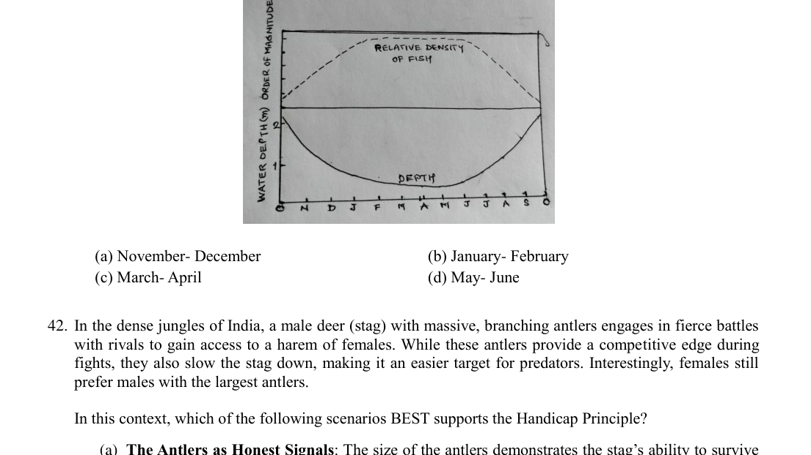
Graph of lake depth and fish density October to OctoberTopic: Oscillations & Waves, Fluid Mechanics Metodi: Physical Modeling, Experimental Data Analysis Competenze: Diagrammatic Reasoning, Physical Reasoning Fonte: Testo (PDF) — p.11
Problema 42
In the dense jungles of India, a male deer (stag) with massive, branching antlers engages in fierce battles with rivals to gain access to a harem of females. While these antlers provide a competitive edge during fights, they also slow the stag down, making it an easier target for predators. Interestingly, females still prefer males with the largest antlers.
In this context, which of the following scenarios BEST supports the Handicap Principle?
(A) The Antlers as Honest Signals: The size of the antlers demonstrates the stag’s ability to survive despite the handicap, signalling superior strength and genetic quality to potential mates. (B) The Antlers as Weaponry: The stag’s antlers are primarily used to defeat rivals, ensuring reproductive success by physically eliminating competition. (C) Runaway Sexual Selection: Female preference for larger antlers evolves independently of their utility, causing the trait to become exaggerated over generations. (D) The Antlers as Camouflage: The antlers resemble branches, providing the stag with protection from predators and simultaneously increasing its attractiveness.
Topic: Newtonian Mechanics Metodi: Physical Modeling Competenze: Physical Reasoning Fonte: Testo (PDF) — p.11
Problema 43
A researcher grows an E. coli culture in a batch medium that contains both glucose and lactose. The growth curve clearly exhibits an initial exponential phase on glucose, followed by a pronounced lag, and then a second exponential phase once lactose metabolism has initiated. Which of the following best explains the molecular mechanism underlying the lag period observed between the two exponential phases?
(A) The accumulation of acidic byproducts from rapid glucose metabolism induces transient cellular repair pathways, temporarily halting cell division until these byproducts are neutralized. (B) Catabolite repression mediated by the cAMP-CRP complex suppresses the transcription of lactose-metabolizing enzymes while glucose is abundant, delaying the induction of the lac operon until glucose levels decline. (C) An osmotic shock is incurred due to the simultaneous uptake of high concentrations of both sugars, necessitating a transient adjustment of the cell’s internal solute balance before normal division resumes. (D) The metabolic shift from aerobic to strictly anaerobic energy production during glucose consumption forces a reconfiguration of the electron transport chain, leading to a delay in the resumption of exponential growth on lactose.
Topic: Oscillations & Waves, Thermodynamics Metodi: Physical Modeling, Experimental Data Analysis Competenze: Physical Reasoning, Mathematical Modeling Fonte: Testo (PDF) — p.12
Problema 44
Elite sprinters often need to perform repeated maximal sprints with only brief recovery periods. One key factor in maintaining high power across bouts is the rapid replenishment of intramuscular phosphocreatine (PCr) during recovery. Which of the following muscular adaptations most directly enhances the rate of PCr resynthesis between sprint efforts?
(A) Upregulation of creatine kinase activity, thereby accelerating the immediate equilibrium between ADP and PCr. (B) Increased mitochondrial density coupled with enhanced oxidative enzyme capacity, facilitating rapid ATP generation via oxidative phosphorylation. (C) Elevated glycolytic enzyme activity, which boosts anaerobic ATP production during recovery intervals. (D) Improved sarcoplasmic reticulum Ca-ATPase function, leading to faster calcium clearance and increased overall energy turnover.
Topic: Conservation of Energy, Thermodynamics Metodi: Physical Modeling, Energy Conservation Method, First Law of Thermodynamics Competenze: Physical Reasoning, Mathematical Modeling Fonte: Testo (PDF) — p.12
Problema 45
In an isolated lung preparation subjected to sudden hypoxia, the pulmonary arteries exhibit an immediate vasoconstrictor response that is rapidly reversed when normoxic conditions are restored. Processes involved in the pathway to vasoconstriction are listed below.
I. Closure of oxygen sensitive channels II. Opening of voltage dependent channels III. Reduction in mitochondrial Reactive Oxygen Species (ROS) production IV. Increase in intracellular V. Membrane depolarization
The correct order of these processes is:
(A) I III V IV II (B) V IV II I III (C) II IV I V III (D) III I V II IV
Topic: Electrostatics, Circuits Metodi: Physical Modeling, Electric Potential Method Competenze: Diagrammatic Reasoning, Physical Reasoning Fonte: Testo (PDF) — p.12
Problema 46
Angiotensin-Converting Enzyme (ACE) converts Angiotensin I to II which acts as vasoconstrictor. Another endocrine hormone, namely vasopressin, also known as anti-Diuretic Hormone (ADH) increases water reabsorption from kidneys. Patients treated with ACE inhibitors are known to show reduced vasopressin levels over time. Which of the following is correct statement about these two molecules?
(A) Both are useful as anti-hypertensive drugs. (B) Administering Vasopressin along with ACE inhibitors will increase the efficacy of the latter. (C) The effectiveness of ACE inhibitors will reduce over time due to reduced vasopressin levels in the blood. (D) Vasopressin can be used as a drug in case of accidental overdose of ACE inhibitors.
Topic: Fluid Mechanics, Thermodynamics Metodi: Physical Modeling, Hydrostatic Equilibrium Competenze: Physical Reasoning Fonte: Testo (PDF) — p.12
Problema 47
The kinetic parameters of two enzymes, namely hexokinase and glucokinase, that both use glucose as a substrate are depicted in the graph.
Which of the following are the correct interpretations?
I. Glucokinase is primarily active in the liver to remove excess glucose from the bloodstream after a meal. II. Hexokinase is primarily active in the pancreas, where it is activated by high glucose concentrations to initiate insulin secretion. III. Hexokinase will primarily function in tissues for glycolysis especially after fasting conditions. IV. Glucokinase is primarily active in brain allowing it to respond to changes in blood glucose levels.
(A) I and III only (B) I and IV only (C) II and IV only (D) II and III only
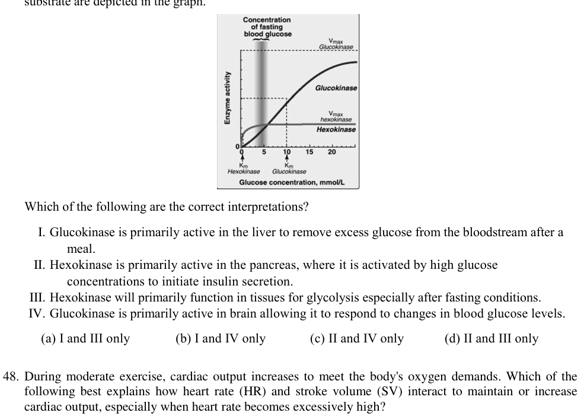
Kinetic parameters of hexokinase and glucokinase vs glucoseTopic: Thermodynamics, Kinetic Theory Metodi: Physical Modeling, Experimental Data Analysis, Graph Linearization Competenze: Diagrammatic Reasoning, Physical Reasoning Fonte: Testo (PDF) — p.13
Problema 48
During moderate exercise, cardiac output increases to meet the body’s oxygen demands. Which of the following best explains how heart rate (HR) and stroke volume (SV) interact to maintain or increase cardiac output, especially when heart rate becomes excessively high?
(A) As heart rate increases, stroke volume always increases due to enhanced venous return, resulting in a proportional rise in cardiac output. (B) At very high heart rates, stroke volume may decrease because diastolic filling time is reduced, which can limit cardiac output despite the high rate. (C) Heart rate and stroke volume are independent of each other, so cardiac output increases linearly with heart rate alone. (D) A high heart rate overcompensates for low stroke volume, ensuring increased cardiac output to meet body’s oxygen demands.
Topic: Fluid Mechanics, Newtonian Mechanics Metodi: Physical Modeling, Continuity Equation Competenze: Physical Reasoning, Mathematical Modeling Fonte: Testo (PDF) — p.13
Problema 49
In a pond dug recently and filled with rain water, the water was assessed for various parameters, periodically during the development of the ecosystem. The likely observation(s) is/are
(A) day time net production exceeds night time respiration in initial stages. (B) the gross production/standing biomass (P/B) ratio would remain steady. (C) entropy in the system, initially being low, would go on increasing. (D) food chains would become progressively more complex.
Topic: Thermodynamics, Oscillations & Waves Metodi: Physical Modeling, First Law of Thermodynamics Competenze: Physical Reasoning, Mathematical Modeling Fonte: Testo (PDF) — p.14
Problema 50
Though the lakes and the streams are fresh water environments, the communities inhabiting them show a drastic difference in behavior. Which of the following statement(s) seem(s) to explain it appropriately?
(A) Oxygen tension is comparatively more uniform in streams. (B) Current is a major controlling and limiting factor in streams. (C) Stream metabolism is generally slower and less variable than the Lake metabolism. (D) Land-water interchange is relatively extensive in streams.
Topic: Fluid Mechanics, Thermodynamics Metodi: Physical Modeling, Continuity Equation Competenze: Physical Reasoning Fonte: Testo (PDF) — p.14
Problema 51
Immunisation is a critical process in protecting individuals from infectious diseases. It involves the administration of vaccines, which stimulate the immune system to produce antibodies. When a vaccine is introduced into the body, it mimics an infection, prompting the immune system to respond. Which of the following statements best describe(s) the mechanism of antibody production and action in immunisation?
(A) Vaccines directly introduce antibodies into the bloodstream to provide immediate immunity against the pathogen. (B) Vaccines stimulate the production of B cells, which then produce antibodies specific to the pathogenic antigen. (C) Antibodies produced during immunisation can be effective against the toxins released during pathogenic infections. (D) Vaccines stimulate production of lymphocytes, which are responsible for producing antibodies after vaccination.
Topic: Modern-Quantum Physics Metodi: Physical Modeling Competenze: Physical Reasoning Fonte: Testo (PDF) — p.14
Problema 52
Measurement of oxygen and carbon dioxide content of two species of lungfish (X and Y) was monitored. The graph was plotted to show oxygen saturation and levels in blood going to and coming from the lungs of the two fishes under varying oxygen tensions. Circles (o) indicate blood going to lungs and triangles () indicate blood coming out from lungs.
Mark the correct interpretation(s):
(A) Low tension in fish Y reflects dominance of water-breathing over air-breathing. (B) Gills of fish X are more efficient in oxygenation compared to its lungs. (C) Higher saturation of oxygen in fish Y as compared to X is due to additional contribution from the lungs. (D) Fish X will survive out of water for longer duration than fish Y.
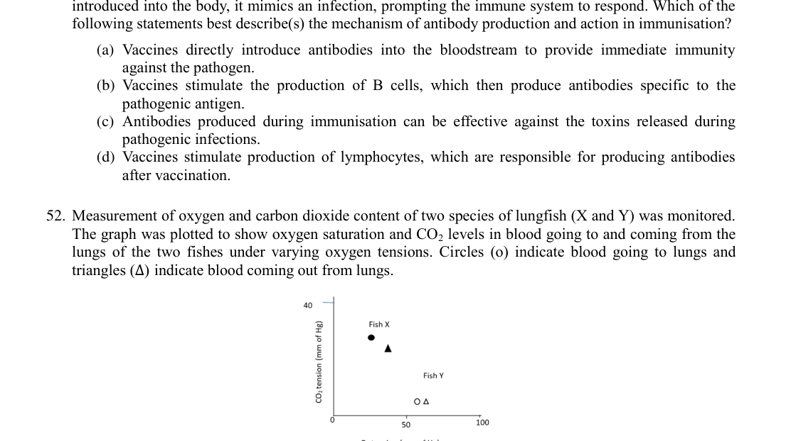
Oxygen saturation and CO2 levels in lungfish X and YTopic: Fluid Mechanics, Thermodynamics Metodi: Physical Modeling, Experimental Data Analysis, Graph Linearization Competenze: Diagrammatic Reasoning, Physical Reasoning Fonte: Testo (PDF) — p.14
Problema 53
When Rh-negative mother carries Rh-positive baby, there’s a risk of Rh incompatibility for the subsequent offspring. However, in about 20% of all the potential cases, the formation of antibodies is prevented, and risk of Rh sensitisation is reduced by protective mechanisms arising from interaction with other blood group genes.
In which of the following situations this mechanism will be observed?
(A) Rh negative mother with blood group O and Rh positive Baby with blood group A. (B) Rh negative mother with blood group A and Rh positive Baby with blood group B. (C) Rh negative mother with blood group B and Rh positive Baby with blood group O. (D) Rh negative mother with blood group AB and Rh positive Baby with blood group A.
Topic: Modern-Quantum Physics Metodi: Statistical Averaging, Physical Modeling Competenze: Mathematical Modeling, Physical Reasoning Fonte: Testo (PDF) — p.15
Problema 54
Batesian and Müllerian mimicry are the two forms of mimicry where one species evolves to resemble the other. Batesian mimicry involves a harmless species mimicking a dangerous one, while Müllerian mimicry involves two or more dangerous species mimicking each other. Which of the following is/are correct statement(s) about these?
(A) Both types of the mimicry are the examples of coevolution. (B) In Batesian mimicry, mimic will offer benefit to model and vice versa. (C) Both the types are example of mutualistic relationships. (D) Müllerian mimicry primarily benefits the prey by reducing predation pressure.
Topic: Oscillations & Waves Metodi: Physical Modeling Competenze: Physical Reasoning Fonte: Testo (PDF) — p.15
Problema 55
Introduction of captive bred individuals into the wild is one of the conservation measures used for some species like the Bearded vulture (Gypaetus barbatus) which were wiped out from the European Alps. The problem with this conservation effort is not the size of the wild population; rather, it is the size of the captive population. Conservation biologists use effective population size () as a measure of the “genetic status” of a population which will sustain enough genetic variability in the captive birds to keep either the captive or the wild population thriving over the long term.
Which of the following measures would reduce the chance of the population losing its genetic variation due to genetic drift?
(A) Boosting the size of captive population of bearded vulture from its current level. (B) Reduce the number of introduced birds per release to one per breeding season. (C) Introduce male birds and female birds, alternately, after a “No-release” period in between. (D) Recruiting additional founders into the captive population.
Topic: Modern-Quantum Physics Metodi: Statistical Averaging, Physical Modeling Competenze: Mathematical Modeling, Physical Reasoning Fonte: Testo (PDF) — p.15
Problema 56
C and C plants represent two different pathways of carbon fixation during photosynthesis. C plants possess specialized leaf anatomy and biochemical pathways that allow them to thrive in intense sunlight, making them more resilient to climate stress. Which of the following statements best describe(s) the primary difference between C and C plants?
(A) C plants use the Calvin cycle for carbon fixation, whereas C plants use a different pathway to minimize photorespiration. (B) C plants have specialized leaf anatomy to reduce water loss, while C plants do not. (C) C plants have a higher water-use efficiency compared to C plants. (D) C plants can perform photosynthesis at lower carbon dioxide concentrations than C plants.
Topic: Thermodynamics, Conservation of Energy Metodi: Physical Modeling, Conservation Laws Competenze: Physical Reasoning Fonte: Testo (PDF) — p.15
Problema 57
Adaptive immune responses following infection or vaccination are graphically shown below. X axis indicates time while Y-axis indicates titres (values) of respective parameters (W, X, Y and Z).
Mark the correct option(s):
(A) Y and Z most likely indicate T-cell and antibody response respectively. (B) P and Q indicate vaccination and active infection respectively. (C) Z indicates killer T cell response as a result of active infection. (D) X and W indicate first and second infectious particle load of the same infective agent.
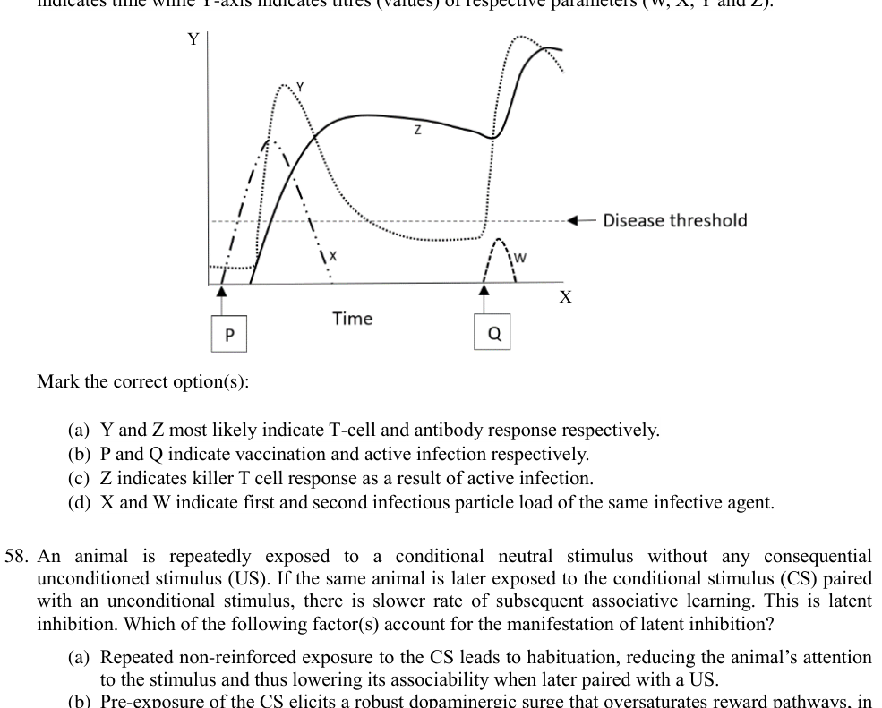
Graph of adaptive immune response parameters W, X, Y, Z vs timeTopic: Oscillations & Waves, Modern-Quantum Physics Metodi: Physical Modeling, Experimental Data Analysis Competenze: Diagrammatic Reasoning, Physical Reasoning Fonte: Testo (PDF) — p.16
Problema 58
An animal is repeatedly exposed to a conditional neutral stimulus without any consequential unconditioned stimulus (US). If the same animal is later exposed to the conditional stimulus (CS) paired with an unconditional stimulus, there is slower rate of subsequent associative learning. This is latent inhibition. Which of the following factor(s) account for the manifestation of latent inhibition?
(A) Repeated non-reinforced exposure to the CS leads to habituation, reducing the animal’s attention to the stimulus and thus lowering its associability when later paired with a US. (B) Pre-exposure of the CS elicits a robust dopaminergic surge that oversaturates reward pathways, in turn diminishing synaptic plasticity required for new associative learning. (C) Repeated CS presentations without the US result in diminished prediction error (difference between predicted and actual outcome) signals, thereby reducing the learning drive when the CS is eventually paired with the US. (D) The continual exposure to the CS transforms it into a conditioned inhibitor that signals the non-occurrence of the US, actively blocking subsequent excitatory conditioning.
Topic: Oscillations & Waves, Newtonian Mechanics Metodi: Physical Modeling, Statistical Averaging Competenze: Physical Reasoning, Mathematical Modeling Fonte: Testo (PDF) — p.16
Problema 59
The graph given below depicts the probability of European hare (Lepus europaeus) browsing [estimated marginal mean 95% Confidence Interval (CI)] on native and exotic plants in communities invaded and uninvaded by Scotch broom (Cytisus scoparius). Different lowercase letters indicate significant differences among means ().
In the context of the graph, which of the following statement(s) is/are correct?
(A) Broom invasion can have negative impact on native species since it could cause cumulative damage by facilitating both herbivores; generalists and specialists. (B) Invasion of broom can lead to increase in survival and growth of other plant species, indirectly by release from hare browsing. (C) The lower hare browsing in the invaded community is behaviourally mediated, since the denser broom may limit hares’ ability to visually locate plants. (D) Broom invasion has facilitative effects on native plants through apparent competition mediated by both mammalian and insect herbivores.
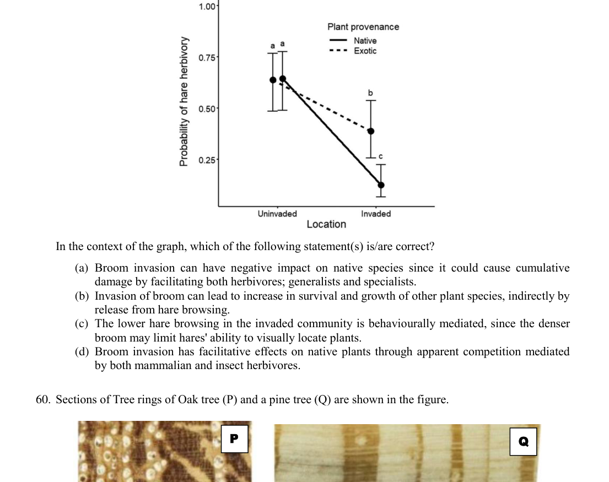
Hare browsing probability on native vs exotic plants, invaded vs uninvadedTopic: Oscillations & Waves Metodi: Experimental Data Analysis, Statistical Averaging, Physical Modeling Competenze: Diagrammatic Reasoning, Physical Reasoning Fonte: Testo (PDF) — p.17
Problema 60
Sections of Tree rings of Oak tree (P) and a pine tree (Q) are shown in the figure.
Which of the following is/are correct?
(A) The two trees are of the same age. (B) It is likely that the oak tree faced a very severe winter in its second year of growth. (C) Larger vessels seen in Oak tree represent summer wood. (D) The tree rings patterns indicate that the two trees probably existed in the same environment.
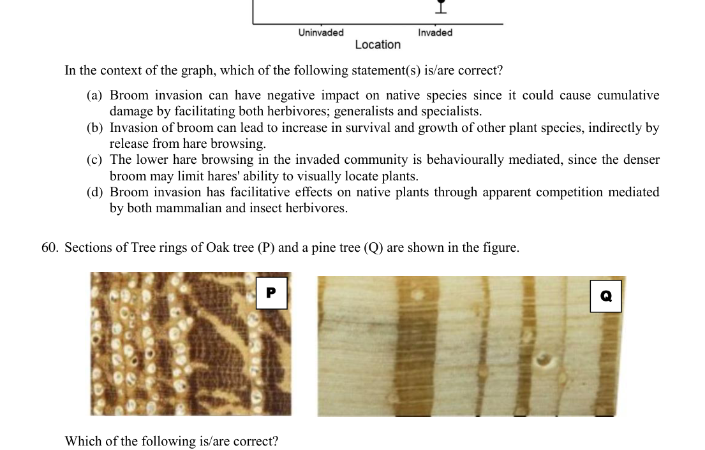
Tree ring sections of Oak tree P and pine tree QTopic: Oscillations & Waves, Thermodynamics Metodi: Physical Modeling, Experimental Data Analysis Competenze: Diagrammatic Reasoning, Physical Reasoning Fonte: Testo (PDF) — p.17